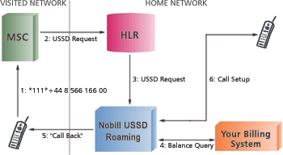

1 Introduction
1.1 Purpose
The purpose of this document is to explain the usage of the Supplementary Service API of the APOXI framework. A Supplementary Service is an extension of the basic telecommunication services (e.g. telephony, fax, Short Message Service (SMS)), which supplies additional functionality.
1.2 Scope & Contents
The document describes which classes and objects are available for interaction with Supplementary Services, what their responsibilities are and how to use these classes in an MMI application environment. The Supplementary Service API resides within the Apoxi Stack Control (ASC). Please see the class reference of the Apoxi ASC module for details on the various classes and objects presented in this document.
1.3 Document Conventions
There are the following formats and document conventions used throughout the document:
- Emphasis - Denoting words of higher importance or new terms being introduced.
SOURCECODE - Denoting source code snippets, EBNF definitions and control code sequences.
1.4 Intended Audience
The document is targeted at application developers and software architects who need to integrate Supplementary Service functionality into their applications. The document provides high-level description of the Supplementary Service API, its components and how to use them to initiate Supplementary Service requests and to receive the results back from the mobile network.
1.5 Reference
| Supplementary Service-PROG-GUIDE |
Supplementary Services - Programmer's Guide to the GSM Stack Interface |
2 Usage
2.1 Introduction
On the lowest level Supplementary Service interaction is nothing more than sending a specific control sequence to the mobile network and parsing the relevant data out of heaps of structures which are returned in response to the initial query. The control string is encoded to hold the type of the Supplementary Service, the desired action on that Supplementary Service and any further parameters. All the communication itself is handled via signals of the GSM stack.
APOXI simplifies that process for the MMI programmer by providing tailored interfaces for working with the Supplementary Services. These interfaces are implemented using handlers and messages.
2.2 Handlers
2.2.1 Introduction
The following is a short overview of the various operations and needed parameters the different Supplementary Services offer. Parameters marked with "(*)" are optional.
Please see Section 3.2 for a list of MMI Basic Service Groups.
| Supplementary Service |
Operation |
Parameters |
| Call Barring |
Activation | Password, MMI Basic Service Group(*) |
| Deactivation | Password, MMI Basic Service Group(*) |
| Interrogation | MMI Basic Service Group(*) |
| Password Change | Old password, new password, confirmation for new password |
| Call Forwarding |
Registration | Destination number, MMI Basic Service Group(*), Time-out (CF on no reply, only) |
| Erasure | MMI Basic Service Group(*) |
| Activation | Destination number(*), MMI Basic Service Group(*), Time-out(*) (CF on no reply, only) |
| Deactivation | MMI Basic Service Group(*) |
| Interrogation | MMI Basic Service Group(*) |
| Call Waiting |
Activation | MMI Basic Service Group(*) |
| Deactivation | MMI Basic Service Group(*) |
| Interrogation | MMI Basic Service Group(*) |
| Calling Line Identification Presentation (CLIP) |
Interrogation | |
| Calling Line Identification Restriction (CLIR) |
Interrogation | |
| Connected Line Identification Presentation (COLP) |
Interrogation | |
| Connected Line Identification Restriction (COLR) |
Interrogation | |
| Unstructured Supplementary Service Data |
n/a | n/a |
Handlers are the only means of interacting with the various Supplementary Services. Each handler is only responsible for a single Supplementary Service and provides various methods for using the service. The handler's interfaces resemble closely the different operations presented above. The advantages are, that the MMI programmer does not have to memorize the various Supplementary Service codes and different control sequences. He simply obtains the handler of the Supplementary Service he wants to use and calls a certain method. Furthermore the handler interface makes sure that the correct parameters are passed on to the GSM network making it impossible for the MMI programmer to omit mandatory parameters, to supply the wrong types of parameters or to mix up the order of the parameters. The handler also only features methods of valid requests for the specific service, thus further simplifying Supplementary Service interaction for the MMI programmer.
Although the handler names are straightforward, the following is a list of all handlers and their responsibilities:
CallBarringHandler - Call Barring Supplementary Service (BAOC, BAOIC, BOAIC-exHC, BAIC, BAIC-Roam).CallForwardingHandler - Call Forwarding Supplementary Service (CFU, CFB, CFNRy, CFNRc).CallWaitingHandler - Call Waiting Supplementary Service.CLIPHandler - Calling Line Identification Presentation Supplementary Service.CLIRHandler - Calling Line Identification Restriction Supplementary Service.COLPHandler - Connected Line Identification Presentation Supplementary Service.COLRHandler - Connected Line Identification Restriction Supplementary Service.MobileOriginatedUSSDHandler - For mobile-originated USSD requests.USSDHandler - For network-originated USSD requests.
2.2.2 Obtaining Handlers
A handler cannot be instantiated directly (in fact it is possible as such, but things will not work if it is done that way). A handler has to be obtained using the ASC StackControl class. This is the ASC master class, which administers the various handlers and makes sure that they are correctly linked into the system and that the message flow works.
The handler is obtained by passing the desired handler's identifier to the static GetHandler method of the StackControl class. The method will instantiate the specified handler and returns a base handler pointer to the new object, which needs to be cast to the specific handler object. Every handler defines a special anonymous enumeration, containing a single element called ID, which is set to the handler's actual identifier.
The following example should make things clear:
CallForwardingHandler *call_forwarding_handler;
BaseHandler *base_handler;
base_handler = StackControl::GetHandler(CallForwardingHandler::ID);
CastHandler(call_forwarding_handler, base_handler);
|
2.2.3 Using the Handlers
Every handler provides methods to interact with the service it is responsible for. These methods resemble closely the five basic operations for Supplementary Services and password change where applicable:
- Registration -
Register method
- Erasure -
Erase method
- Activation -
Activate method
- Deactivation -
Deactivate method
- Interrogation -
RequestStatus method
- Change password -
ChangePassword method (only available for the Call Barring Supplementary Service)
The availability of these methods may vary. Some handlers do not offer some methods (e.g. there is no registration method for the CLIR handler) simply because that operation isn't defined for the Supplementary Service . Upon invocation of such a method any parameters are checked for their plausibility, the correct control sequence string is built und sent to the mobile network.
The return values of the methods might vary depending on the parameter list and the type of action or service requested. All possible values are defined in the SsApiRc enumeration, which can be found in the ASC Types.hpp file and in the Appendix. The following are the most common values one might encounter:
Success - The request was successfully sent to the mobile network.SupplementaryServicePending - There is already another Supplementary Service transaction active.NormalServiceRequired - The network is not in a state, which allows the sending of the request.
The handler also provides state information during a transaction (including this return value) using several messages. Please see the following Section for details.
CallForwardingHandler *call_forwarding_handler;
BaseHandler *base_handler;
base_handler = StackControl::GetHandler(CallForwardingHandler::ID);
CastHandler(call_forwarding_handler, base_handler);
call_forwarding_handler.Activate(Cfu, Telephony);
|
See the class documentation of each handler for details on the methods, parameters and return values.
This concludes the issue of using handlers and sending requests to the mobile network. The following Section describes how to receive the results returned by the mobile network.
2.3 Messages
2.3.1 Introduction
The communication with the Supplementary Service layer is completely asynchronous. That is although every handler method provides its result with a return value, messages are sent to indicate the current state of the handler and the transaction. Furthermore messages are the means of receiving any data sent from the mobile network in response to a request.
2.3.2 Receiving Messages
Any data received from the mobile network is transferred to a specific application message. The resulting message is then sent via the MessageRouter. Thus only the application, which initiated the request in the first place will get the result message.
After posting the message to the message router, the message router will call the OnMessage method of the specific application with the message as parameter. The application then has to decide what to do with the message and the data within.
Figure 2.1: Message creation and interaction
2.3.3 Handler Status Messages
As mentioned before the comminucation is completely asynchronous and the handlers provide some status information details on the transaction. The following messages are used for that purpose:
SsRequestSentMsg - This message indicates, that the handler has just sent the request to the GSM stack and is awaiting its response. The message contains the control sequence string sent to the stack.SsRequestAcceptedMsg - This message indicates, that the GSM stack accepted the request. The GSM stack has already assigend a tipd to the request and is about to send it to the mobile network. The tipd is a unique transaction identifier. It is generated when the stack accepts a request and is used in any subsequent messages, which belong to that transaction. It is the only means of mapping incoming messages with initial requests or connecting multiple messages, which belong to the same transaction. The message contains the tipd of the transaction, as well as the specific Supplementary Service code, basic service group if any and any given positional parameters.SsRequestRejectedMsg - This message indicates that an error occured during the sending of the request and that the stack did not accept the request. The message contains the handler's return value as well as the specific Supplementary Service code, basic service group if any and any given positional parameters of the initial request.
This leads to three possible message flows when initiating a request:
- Successful transaction setup
SsRequestSentMsg - The handler accepted the request and sent it on to the GSM stack.SsRequestAcceptedMsg - The GSM stack accepted the request and sent it on to the mobile network.- Any result messages from the mobile network. These can include error messages that the mobile network was unable to handle the request.
Figure 2.2 Successful transaction (example Call Forwarding status request)
- Immediate rejection of the request
SsRequestRejectedMsg - The request was rejected by the handler itself before it is sent to the GSM stack. Reasons for this to happen include, that the mobile network is not accessible at the moment or that another Supplementary Service request is already pending.
Figure 2.3 Request rejected by handler (example Call Forwarding status request)
- GSM stack rejects the request
SsRequestSentMsg - The handler accepted the request and sent it on to the GSM stack.SsRequestRejectedMsg - The GSM stack immediately rejected the request. No data was sent to the mobile network and the transaction (which in fact has never started) is over.
Figure 2.4 Request rejected by GSM stack or network (example Call Forwarding status request)
2.4 USSD Interaction
2.4.1 Introduction
Unstructured Supplementary Service Data (USSD) provides a session-oriented possibility for information exchange between the MS and the GSM network. The connection between the MS and the GSM network exists until it is terminated.
USSD is used to send data packets from between MS and GSM network in both directions. The data sent may consist of text as well as binary data. The receiver of the data must be able to read and understand it, otherwise the data is rejected.
Figure 2.5 shows an example of how USSD can be used to accomplish roaming for pre-paids. In this case the call request is sent to the home network via an USSD request. The home network checks the current billing status and sets up a callback call.

Figure 2.6 USSD example application, taken from http://www.symsoft.se/Files/USSD.html.
2.4.2 General USSD Interaction
USSD requests are handled slightly different than regular Supplementary Service request because they are session oriented. That means that a single session or transaction can consist of many requests being sent back and forth within the scope of that single transaction. Therefore the handler has to provide means to send requests within a given transaction context and to end that transaction.
The transaction is generally identified by its tipd (the unique transaction identifier, used to mark messages, which belong together). Therefore the handler's methods require a valid tipd to be specified. Alternatively and for convenience a previously received message can be specified from which the actual tipd is extracted. Furthermore the handler provides methods to end the transaction gracefully (which is indicated by an USSDEndMsg), alternatively to reject it or to signal an error to the mobile network.
Figure 2.7 USSD transaction
2.4.3 Network-Originated USSD Interaction
The interaction with network-originated USSD request is slightly different from the regular USSD transaction usage. In this case the transaction is initiated by the mobile network and not by an application using a handler. Therefore it is not known which application - if any - wants to react to the incoming request.
Upon reception of the first request a USSDBeginMsg is generated. The message does not contain any data. Its sole purpose is to identify the application, which wants to handle the incoming request. The message itself is a system message and thus sent to every application by default. When an application receives the message it can choose either to ignore it or to commence the USSD transaction by calling the BeginTransaction method of the message object. This will link the application to the USSD transaction und triggers the actual data message to be sent to the application.
The mobile network has two possiblities (apart from error indications of course) to reply to a USSD request. On the one hand it can send back another USSD request. The request might contain result data of the initial request, but it requires the mobile station to answer and supply additional data. So if a USSD request is received as a reply, additional data has to be sent to the mobile network.
On the other hand the mobile network can send back a USSD notification. A notification contains result data of the initial request and simply has to be acknowledged by the mobile station. Only an empty acknowledge message has to be sent back to the mobile network.
Note that there must not be more than one application reacting to the message in the system. The first application to react will be assigned the transaction. Any subsequent tries to register for the transaction will result in a Supplementary Service-pending error. If two or more apllications try to register simultaneously it is not determenistic, which application will actually be assigned and which will be denied. This leads to completely undeterministic and hard to track race conditions, which have to be avoided.
Figure 2.8 Network-originated USSD transaction initiation
2.5 Call Control by SIM
2.5.1 Introduction
Call control by SIM denotes a feature of the SIM card, which enables the card to intercept any request to the GSM network and transform it into another request, which will be sent instead. This means that e.g. a Supplementary Service request could be intercepted and transformed into a call, instead of sending the appropriate control sequence a call is set up. There are no limits concerning the transformation of requests. A call could be transferred into another a call, a Supplementary Service request or an USSD request, wheras a Supplementary Service request could be transferred into another Supplementary Service request, a call or an USSD request. For USSD requests applies the same as for Supplementary Service requests. In short everything can be transformed in everything else.
2.5.2 Usage
Call control by SIM is completely integrated into the Supplementary Service API and thus is completely transparent to the user. One has to distinguish three important cases. Firstly a Supplementary Service request or an USSD request being transformed into a call, secondly a call being transferred into a Supplementary Service request or an USSD request and thirldy a Supplementary Service request or an USSD request being transformed into another Supplementary Service request or USSD request.
A Supplementary Service request being transformed into a call is fairly straightforward. The initial request is intercepted on its way to the GSM stack and the requester is notified of the transformation. Thus the handler will send an SsRequestRejectedMsg containing the specific return code to indicate the transformation and the request is over. In the mean time a call is set up, which in fact is not of any importance to the Supplementary Service API.
The following return codes identify the different transformations of a Supplementary Service:
SupplementaryServiceChangedToSs - The Supplementary Service was transformed into another Supplementary Service.SupplementaryServiceChangedToUssd - The Supplementary Service was transformed into an USSD request.SupplementaryServiceChangedToMoc - The Supplementary Service was transformed into a mobile originated call (MOC).
A call being transformed into an Supplementary Service request is a bit complicated. The Supplementary Service API will be notified by the SIM card that a transformation just occured and that the Supplementary Service request was sent to the mobile network. The Supplementary Service API will then simulate that the request has in fact been initiated by the user and not the SIM card. Thus the according messages (a SsRequestSentMsg and a SsRequestAcceptedMsg) will be generated and dispatched to inform the MMI that a Supplementary Service request has just been sent. The answer to the request is again picked up wrapped in a message and sent to the MMI just as a regular Supplementary Service request would do. In the mean time the call setup was terminated, which again is of no importance to the Supplementary Service API.
A Supplementary Service request being transformed into another Supplementary Service request is a combination of the previous two scenarios. The initial Supplementary Service request is terminated as described in the first scenario and the handler will send an SsRequestRejectedMsg to the requester to indicate the termination of the inital request. The new request is setup according to the description in the second scenario. The Supplementary Service API simulates the new request and the processes the results just as if a regular Supplementary Service request was made.
3 Reference
3.1 Message Reference
3.1.1 Overview
| Message Name |
Short Description |
| CallBarringActivatedMsg |
Triggered by a Call Barring activation request. Contains the initial parameters and a vector of call barring features, which contains the basic service groups for which call barring is activated. |
| CallBarringDeactivatedMsg |
Triggered by a Call Barring deactivation request. Contains the initial parameters and a vector of call barring features, which contains the basic service groups for which call barring is deactivated. |
| CallBarringPasswordChangedMsg |
Triggered by a Call Barring password change request. Contains the initial parameters and the new password. |
| CallBarringStatusMsg |
Triggered by a Call Barring status interrogation request. Contains the initial parameters and a vector of basic service groups for which Call Waiting is activated. |
| CallForwardingActivatedMsg |
Triggered by a Call Forwarding activation request. Contains the initial parameters and a vector of call forwarding features for which call forwarding is activated. |
| CallForwardingActiveMsg |
Notification that Call Forwarding is active upon initiating a mobile originated call. |
| CallForwardingDeactivatedMsg |
Triggered by a Call Forwarding deactivation request. Contains the initial parameters and a vector of call forwarding features for which call forwarding is deactivated. |
| CallForwardingErasedMsg |
Triggered by a Call Forwarding erasure request. Contains the initial parameters and a vector of call forwarding features for which call forwarding is erased. |
| CallForwardingRegisteredMsg |
Triggered by a Call Forwarding registration request. Contains the initial parameters and a vector of call forwarding features for which call forwarding is registered. |
| CallForwardingStatusMsg |
Triggered by a Call Forwarding status interrogation request. Contains the initial parameters and either a vector of call forwarding features, or an empty vector but an overall status. |
| CallHeldMsg |
Notification that the current call is held at the other party. This is the counterpart to the CallRetrievedMsg. |
| CallIsWaitingMsg |
Notification that the current call is waiting at the other party. |
| CallRetrievedMsg |
Notification that the current call is retrieved by the other party. This is the counterpart to the CallHeldMsg. |
| CallWaitingActivatedMsg |
Triggered by a Call Waiting activation request. Contains the initial parameters and a vector of basic service groups for which Call Barring is activated. |
| CallWaitingDeactivatedMsg |
Triggered by a Call Waiting deactivation request. Contains the initial parameters and a vector of basic service groups for which Call Barring is deactivated. |
| CallWaitingStatusMsg |
Triggered by a Call Waiting status interrogation request. Contains the initial parameters and a vector of basic service groups for which Call Barring is activated. |
| ClipStatusMsg |
Triggered by a CLIP status interrogation request. Contains the current CLIP status. |
| ClirNotSurpressedMsg |
Notification that the the CLI is not surpressed at the other party, i.e. the number is shown. |
| ClirStatusMsg |
Triggered by a CLIR status interrogation request. Contains the current CLIR status. |
| ColpStatusMsg |
Triggered by a COLP status interrogation request. Contains the current COLP status. |
| ColrStatusMsg |
Triggered by a COLR status interrogation request. Contains the current COLR status. |
| CugCallMsg |
Notification that the incoming or outgoing call is a closed-user-group call. |
| EctActiveMsg |
Indication that the current call has been transferred. This notifiaction is sent to the party being transferred as well as the party at the destination of the transfer. |
| EctAlertingMsg |
Indication for the party being transferred that the transferred call is ringing at the destination party. |
| ForwardedCallIncomingMsg |
Notification that the incoming call has been forwarded from a different party (Message received by C subscriber). |
| IncomingCallForwardedMsg |
Notification that an incoming call was forwarded to a different party (Message received by B subscriber). |
| MultiPartyCallInvokedMsg |
Notification that the current call was added to a multy-party call. |
| NetworkSsErrorMsg |
Triggered if the mobile network signals an error while processing the request. Contains the error code sent by the mobile network. |
| NetworkSsRejectedMsg |
Triggered if the mobile network rejects the request. Contains the tagged problem code sent by the mobile network. |
| OutgoingCallForwardedMsg |
Notification that the outgoing call was forwarded to another destination (Message received by A subscriber). |
| SsErrorMsg |
Triggered by an error during message generation. Contains the error code and an error text string. |
| SsRequestAcceptedMsg |
This message indicates, that the GSM stack accepted the request. The GSM stack has already assigend a tipd to the request and is about to send it to the mobile network. The message contains the tipd of the transaction, as well as the specific Supplementary Service code, basic service group if any and any given positional parameters. |
| SsRequestRejectedMsg |
This message indicates that an error occured during the sending of the request and that the stack did not accept the request. The message contains the handler's return value as well as the specific Supplementary Service code, basic service group if any and any given positional parameters of the initial request. |
| SsRequestSentMsg |
This message indicates, that the handler has just sent the request to the GSM stack and is awaiting its response. The message contains the control sequence string sent to the stack. |
| StackSsRejectedMsg |
This message indicates, that the GSM stack rejected the request after it has previously decided to accept it by sending the Begin_Acc signal. |
| UssdBeginMsg |
Triggered by a network-originated USSD request. Used to determine the application which wants to commence the transaction. |
| UssdDataMsg |
Triggered by the mobile network's response to a mobile originated USSD request. Contains the requested data. |
| UssdEndMsg |
Triggered if the mobile network signals the end of an active USSD transaction. |
| UssdNotifyMsg |
Triggered by an incoming USSD notification. Contains the notifiaction data. The application needs to acknowledge the reception of the notification. |
| UssdRequestMsg |
Triggered by an incoming USSD request. Contains the request data. The application needs to send specific response data back. |
| UssdRequestResentMsg |
Indication that the sending of the initial request with protocol version 2 failed and that the request was resent using protocol version 1. |
Annotation for Call Forwarding:
- A-Subscriber - A subscriber who is placing an outgoing call to a B-subscriber.
- B-Subscriber - A subscriber who has call forwarding activated and is forwarding incoming calls.
- C-Subscriber - The subscriber to whom the forwarded call is delivered.
3.1.2 Call Barring
| Parameter |
Description |
| tipd |
The tipd of the transaction. |
| call_barring_features |
A vector of CallBarringFeature objects, which status equals active and operative. The feature object contains the status code and the MMI basic service group. |
| parameter_ss_code |
The SsCode parameter of the initial request. |
| parameter_basic_service |
The ServiceGroup parameter of the initial request. |
| Parameter |
Description |
| tipd |
The tipd of the transaction. |
| call_barring_features |
A vector of CallBarringFeature objects, which status equals provisioned and not active. The feature object contains the status code and the MMI basic service group. |
| parameter_ss_code |
The SsCode parameter of the initial request. |
| parameter_basic_service |
The ServiceGroup parameter of the initial request. |
| Parameter |
Description |
| tipd |
The tipd of the transaction. |
| new_password |
The password string returned by the mobile network. |
| param_ss_code |
The SsCode parameter of the initial request. |
| param_old_password |
The old password parameter string of the initial request. |
| param_new_password |
The new password parameter string of the initial request. |
| param_conf_password |
The password confirmation parameter string of the initial request. |
| Parameter |
Description |
| tipd |
The tipd of the transaction. |
| ss_status |
The status of the service (SsStatus). This is set to provisioned and activated, if no overall status, but a list of MMI basic service groups was provided. |
| basic_service_list |
A vector of SsGroup objects, which contains the MMI basic service groups that are provisioned and active. The vector is empty if an overall status was provided |
| parameter_ss_code |
The SsCode parameter of the initial request. |
| parameter_basic_service |
The ServiceGroup parameter of the initial request. |
3.1.3 Call Forwarding
| Parameter |
Description |
| tipd |
The tipd of the transaction. |
| ss_code |
The SsCode specifying which Call Forwarding subservice has been activated. |
| forwarding_features |
A vector of ForwardingFeature objects. Each element represents a MMI basic service group. It contains the group's identifier, the current status, the destination number of the call forwarding and the time-out for CFNRy. If the list is empty Call Forwarding was activated according to the initial parameters. |
| parameter_ss_code |
The SsCode parameter of the initial request. |
| parameter_basic_service |
The ServiceGroup parameter of the initial request. |
| parameter_phonenumber |
The PhoneNumber parameter of the initial request. |
| parameter_time_out |
The time-out parameter of the initial request. |
| Parameter |
Description |
| tipd |
The tipd of the transaction. |
| ss_code |
The SsCode specifying which Call Forwarding subservice has been deactivated. |
| forwarding_features |
A vector of ForwardingFeature objects. Each element represents a MMI basic service group. It contains the group's identifier, the current status, the destination number of the call forwarding and the time-out for CFNRy. If the list is empty Call Forwarding was deactivated according to the initial parameters. |
| parameter_ss_code |
The SsCode parameter of the initial request. |
| parameter_basic_service |
The ServiceGroup parameter of the initial request. |
| Parameter |
Description |
| tipd |
The tipd of the transaction. |
| ss_code |
The SsCode specifying which Call Forwarding subservice has been erased. |
| forwarding_features |
A vector of ForwardingFeature objects. Each element represents a MMI basic service group. It contains the group's identifier, the current status, the destination number of the call forwarding and the time-out for CFNRy. If the list is empty Call Forwarding was erased according to the initial parameters. |
| parameter_ss_code |
The SsCode parameter of the initial request. |
| parameter_basic_service |
The ServiceGroup parameter of the initial request. |
| Parameter |
Description |
| tipd |
The tipd of the transaction. |
| ss_code |
The SsCode specifying which Call Forwarding subservice has been registered. |
| forwarding_features |
A vector of ForwardingFeature objects. Each element represents a MMI basic service group. It contains the group's identifier, the current status, the destination number of the call forwarding and the time-out for CFNRy. If the list is empty Call Forwarding was registered according to the initial parameters. |
| parameter_ss_code |
The SsCode parameter of the initial request. |
| parameter_basic_service |
The ServiceGroup parameter of the initial request. |
| parameter_phonenumber |
The PhoneNumber parameter of the initial request. |
| parameter_time_out |
The time-out parameter of the initial request. |
| Parameter |
Description |
| tipd |
The tipd of the transaction. |
| ss_status |
The status of the service (SsStatus). This is set to 0, if no overall status, but a list of forwarding features was provided. |
| forwarding_features |
A vector of ForwardingFeature objects. Each element represents a MMI basic service group. It contains the group's identifier, the current status, the destination number of the call forwarding and the time-out for CFNRy. The list is empty if an overall status was provided. |
| parameter_ss_code |
The SsCode parameter of the initial request. |
| parameter_basic_service |
The ServiceGroup parameter of the initial request. |
3.1.4 Call Waiting
| Parameter |
Description |
| tipd |
The tipd of the transaction. |
| ss_status |
The status of the service (SsStatus). This is active and operative. |
| basic_service_list |
A vector of SsGroup objects, which contains the MMI basic service groups that are active and operative. |
| param_basic_service |
The ServiceGroup parameter of the initial request. |
| Parameter |
Description |
| tipd |
The tipd of the transaction. |
| ss_status |
The status of the service (SsStatus). This is provisioned and not active. |
| basic_service_list |
A vector of SsGroup objects, which contains the MMI basic service groups that are provisioned and not active. |
| param_basic_service |
The ServiceGroup parameter of the initial request. |
| Parameter |
Description |
| tipd |
The tipd of the transaction. |
| ss_status |
The status of the service (SsStatus). This is set to provisioned and activated, if no overall status, but a list of MMI basic service groups was provided. |
| basic_service_list |
A vector of SsGroup objects, which contains the MMI basic service groups that are provisioned and active. The vector is empty if an overall status was provided |
3.1.5 Line Identification
| Parameter |
Description |
| tipd |
The tipd of the transaction. |
| ss_status |
The status of the service (SsStatus). |
| Parameter |
Description |
| tipd |
The tipd of the transaction. |
| ss_status |
The status of the service (SsStatus). |
| cli_restriction_option |
The CliRestrictionOption indicating whether the CLIR setting is permanent, or if it can be changed and defaults either to allowed or to restricted.
Possible values: Permanent, TemporaryDefaultRestricted or TemporaryDefaultAllowed. |
| Parameter |
Description |
| tipd |
The tipd of the transaction. |
| ss_status |
The status of the service (SsStatus). |
| Parameter |
Description |
| tipd |
The tipd of the transaction. |
| ss_status |
The status of the service (SsStatus). |
3.1.6 USSD
| Parameter |
Description |
| tipd |
The tipd of the transaction. |
| Parameter |
Description |
| tipd |
The tipd of the transaction. |
| data |
The string containing the USSD data. |
| data_coding_scheme |
The data coding scheme (DataCodingScheme) the data string is encoded in. |
| Parameter |
Description |
| tipd |
The tipd of the transaction. |
| Parameter |
Description |
| tipd |
The tipd of the transaction. |
| control_info |
The string containing the USSD data. |
| data_coding_scheme |
The data coding scheme (DataCodingScheme) the data string is encoded in. |
| Parameter |
Description |
| tipd |
The tipd of the transaction. |
| control_info |
The string containing the USSD data. |
| data_coding_scheme |
The data coding scheme (DataCodingScheme) the data string is encoded in. |
| Parameter |
Description |
| new_tipd |
The new tipd of the resent transaction. |
| old_tipd |
The tipd of the failed transaction. |
3.1.7 Notification Messages
| Parameter |
Description |
| tipd |
The tipd of the transaction. |
| ss_code |
The SsCode specifying the Call Forwarding subservice. |
| Parameter |
Description |
| tipd |
The tipd of the transaction. |
| Parameter |
Description |
| tipd |
The tipd of the transaction. |
| Parameter |
Description |
| tipd |
The tipd of the transaction. |
| Parameter |
Description |
| tipd |
The tipd of the transaction. |
| Parameter |
Description |
| tipd |
The tipd of the transaction. |
| cug_index |
The index of the closed user group. |
| Parameter |
Description |
| tipd |
The tipd of the transaction. |
| rdn_selector |
Indicator (RdnChoice) specifying whether the other party's number is available and if its presentation is allowed. |
| address |
The PhoneNumber of the other party. |
| sub_address |
Meaning not known yet. |
| Parameter |
Description |
| tipd |
The tipd of the transaction. |
| Parameter |
Description |
| tipd |
The tipd of the transaction. |
| ss_code |
The SsCode specifying the Call Forwarding subservice. |
| Parameter |
Description |
| tipd |
The tipd of the transaction. |
| ss_code |
The SsCode specifying the Call Forwarding subservice. |
| Parameter |
Description |
| tipd |
The tipd of the transaction. |
| Parameter |
Description |
| tipd |
The tipd of the transaction. |
| ss_code |
The SsCode specifying the Call Forwarding subservice. |
3.1.7 Network Error Messages
| Parameter |
Description |
| tipd |
The tipd of the transaction. |
| error_code |
The SsErrorCode specifying the error. |
| Parameter |
Description |
| tipd |
The tipd of the transaction. |
| tagged_problem_code |
The TaggedProblemCode describing the cause of the rejection. |
3.1.8 Supplementary Service Framework Layer Messages
| Parameter |
Description |
| tipd |
The tipd of the transaction. |
| error_code |
The error code (SsBaseHandler::ReturnCode) specifying the error. |
| error_text |
A String describing the error in more detail. |
| Parameter |
Description |
| tipd |
The tipd of the transaction. |
| ss_code |
The SsCode specifying the Supplementary Service. |
| basic_service |
The ServiceGroup, if specified. |
| operation_code |
The SsOperationCode specifying which operation is attempted on the Supplementary Service. |
| parameter1 |
The string of the first positional parameter, if specified. |
| parameter2 |
The string of the second positional parameter, if specified. |
| parameter3 |
The string of the third positional parameter, if specified. |
| Parameter |
Description |
| error_code |
The handler's return value (SsApiRc) specifying the error. |
| ss_code |
The SsCode specifying the Supplementary Service. |
| basic_service |
The ServiceGroup, if specified. |
| operation_code |
The SsOperationCode specifying which operation is attempted on the Supplementary Service. |
| parameter1 |
The string of the first positional parameter, if specified. |
| parameter2 |
The string of the second positional parameter, if specified. |
| parameter3 |
The string of the third positional parameter, if specified. |
| cause |
The CallErrorCause describing why the request was rejected. |
| Parameter |
Description |
| ss_control_seq |
The control sequence string sent to the GSM stack. |
| ss_code |
The SsCode specifying the Supplementary Service. |
| basic_service |
The ServiceGroup, if specified. |
| operation_code |
The SsOperationCode specifying which operation is attempted on the Supplementary Service. |
| parameter1 |
The string of the first positional parameter, if specified. |
| parameter2 |
The string of the second positional parameter, if specified. |
| parameter3 |
The string of the third positional parameter, if specified. |
| Parameter |
Description |
| tipd |
The tipd of the transaction. |
| cause |
The CallErrorCause describing why the request was rejected. |
3.2 MMI Basic Service Groups
|
Telecommunication Service
|
MMI Service Code
|
| Telephony |
11 |
| All data teleservices |
12 |
| Facsimile services |
13 |
| Short Message Service |
16 |
| All teleservices except SMS |
19 |
| Voice Group Service - Voice Group Call Service (VGCS) |
17 |
| Voice Group Service - Voice Broadcast Service (VBS) |
18 |
| All bearer services |
20 |
| All async services |
21 |
| All sync services |
22 |
| All data circuit sync |
24 |
| All data circuit async |
25 |
| All dedicated packet access |
26 |
| All dedicated PAD access |
27 |
| All GPRS bearer services |
99 |
| UnspecifedRc |
Unspecifed MN return code. |
| Success |
MN accepted supplementary service request. |
| SupplementaryServicePending |
A supplementary service is currently pending. |
| SupplementaryServiceNotPending |
Operation requires active supplementary service. |
| InvalidTipd |
An invalid Tipd is assigned to supplementary service. |
| InvalidServiceCode |
An invalid service code was passed to the handler method. |
| InvalidMmiServiceGroup |
An invalid basic mmi service group was passed to the handler method. |
| InvalidBasicService |
An invalid basic service was passed to the handler, either it was invalid or there is no MMI code for the basic service |
| InvalidTimeOut |
An invalid time_out value (not in 5 <= value <= 30) was supplied. |
| InvalidPhoneNumber |
An invalid or empty phone number was supplied. |
| SupplementaryServiceDenied |
Supplementary service request rejected by MN. |
| NormalServiceRequired |
Supplementary service requires normal service registration state. |
| SsDataLocked |
Unable to access. Data locked by an other application. |
| ConfPasswordMismatch |
Password mismatch between new password and confirmation |
| SupplementaryServiceChangedToMoc |
Because of CallControl by Sim the SS was changed to a MOC. |
| SupplementaryServiceChangedToSs |
Because of CallControl by Sim the SS was changed to another SS. |
| SupplementaryServiceChangedToUssd |
Because of CallControl by Sim the SS was changed to a USSD. |
| UssdTransactionError |
An error occurred trying to initiate a USSD transaction |
Appendix I - Glossary
- AoC
- Advice of Charge
- AoCC
- AoC Charging
- AoCI
- AoC Information
- APOXI
- An object oriented application framework for development of man machine interface and applications for mobile terminals. The part of the mobile phone's software the simplifies the communication between MMI and GSM stack.
- BAIC
- Barring of All Incoming Calls
- BAIC roaming
- Barring of Incoming Calls when roaming outside the HPLMN country
- BAOC
- Barring of All Outgoing Calls
- BOIC
- Barring of Outgoing International Calls
- BOIC exHC
- Barring of Outgoing International Calls except Home Country
- BS
- Bearer Service - Basic Services for data transmission
- CB
- Call Barring
- CCBS
- Completion of Calls to Busy Subscriber
- CD
- Call Deflection
- CF
- Call Forwarding
- CFB
- Call Forwarding Busy
- CFNRc
- Call Forwarding Not Reachable
- CFNRy
- Call Forwarding No Reply
- CFU
- Call Forwarding Unconditional
- CLI
- Calling Line Identification
- CLIP
- CLI Presentation
- CLIR
- CLI Restriction
- CNAP
- Calling Name Presentation
- COLP
- Connected Line Identification Presentation
- COLR
- Connected Line Identification Restriction
- CUG
- Closed User Group
- CW
- Call Waiting (synonym for WAIT)
- ECT
- Explicit Call Transfer
- eMLPP
- enhanced Multi-Level Precedence and Pre-emption
- Fixed Network
- A wire-based phone network
- GSM
- Global System for Mobile Communication.
- GSM Network
- The whole infrastructure needed to operate mobile phones
- GSM Stack
- The part of a mobile phone's software that is managing the interaction between the MS and the GSM network
- HLR
- Home Location Register - A component of the GSM network
- HOLD
- Call Holding
- HPLMN
- Home PLMN - The GSM network of a subscriber's provider, where he has his contract.
- ISDN
- Integrated Services Digital Network
- MMI
- Man Machine Interface - The part of the mobile phone's software that is responsible for interacting with the user.
- Mobile Network
- Please see GSM Network
- Mobile Subscriber
- Any person operating a mobile phone
- MPTY
- Multi Party Service
- MS
- Mobile Station = Software (MMI + APOXI + GSM Stack) + Hardware.
- PLMN
- Public Lands Mobile Network - The GSM network infrastructure of one provider. If there are more then one provider in a country, there are also more PLMNs.
- Service Provider
- Entity providing the GSM network infrastructure and services.
- Signal
- Means of communication between the GSM stack and APOXI
- SPNP
- Support of Private Numbering Plan
- Supplementary Service
- Supplementary Service - Services which enhance Basic Services
- Supplementary Service Control Sequence
- Character string sent to the GSM network to invoke an operation on an Supplementary Service
- Subscriber
- Any person operating a phone
- TS
- Tele Service - Basic Services for speech and SMS transmission
- UDUB
- User Determined User Busy - Rejects an incoming call and sends the user busy signal.
- USSD
- Unstructured Supplementary Service Data
- UUS
- User-to-User Signaling
- VPLMN
- Visited PLMN - A GSM network where a subscriber is roaming in.
- WAIT
- Call Waiting